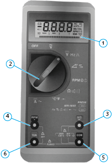
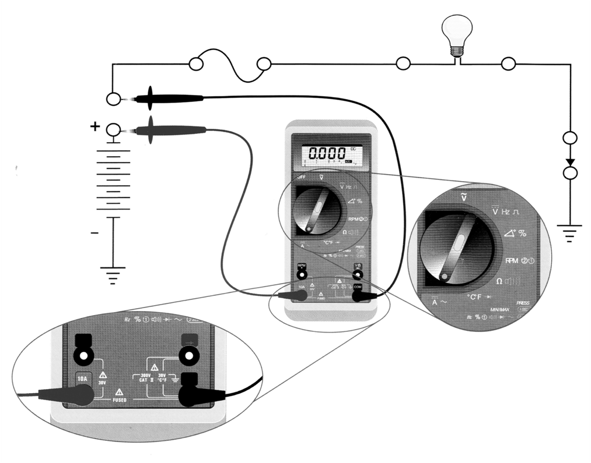

Medições
Uso do multímetro para medições diversas.
Especificações mínimas do multímetro
Tensão DC = 500 mV a 600 V Tensão AC = 5 V a 600 V Corrente DC = 320 micro A até 10 A
Corrente AC = 320 micro A até 10 A
Resistência Ohm = 320 micro A até 32 Mega Ohm
Teste de diodo continuidade audível
Temperatura (sensor termopar)
 |
(1) | Display digital. |
| (2) | Botão de função. | |
| (3) | Terminal de entrada para medições de tensão, resistência, diodo, e frequência. | |
| (4) | Terminal de entrada. | |
| (5) | Terminal comum de retorno para todas as medições. | |
| (6) | Terminal de entrada. | |
Uso de pontas de provas especiais
Para reduzir a possibilidade de danos aos pinos e ao chicote, use as pontas de este do kit de ferramenta VCO-950 ao efetuar a medição.
 |
Nota: Quando efetuar medidas na massa de um bloco, use uma superfície de metal limpa e sem pintura para obter medidas precisas.
|
Como medir corrente
|
Atenção: Certifique-se de que as pontas de prova estejam conectadas nos terminais do multímetro. Consulte as instruções do fabricante do multímetro.
|
Abra o circuito no ponto em que a corrente deve ser medida. Selecione a função de corrente CA(A~) ou CC (A-) no medidor, Coloque as
pontas de prova do medidor entre as extremidades do circuito aberto para medir a amperagem e leia a medição exibida.

Como medir tensão
|
Atenção: Certifique-se de que as pontas de prova estejam conectadas nos terminais do multímetro. Consulte as instruções do fabricante do multímetro.
|
Selecione a função de tensão CA (V~) ou CC (V-) no medidor. Encoste a ponta de prova positiva (+) do multímetro em um terminal e a ponta
negativa em outro terminal, em seguida leia a medição exibida.

Como medir resistência
Selecione a função resistência no medidor. Certifique-se de que não haja tensão nos componentes sendo testados. Desconecte ambas as
extremidades do circuito ou do componente a ser medido. Encoste uma das pontas de prova em um terminal do circuito e a outra ponta no
outro terminal, em seguida leia a medição exibida.

Como medir isolação
Este teste tem a finalidade de identificar se um fio está encostando em outro fio do chicote elétrico (fios descascados, derretidos), gerando
um resultado indesejado. Selecione a função de continuidade no medidor (normalmente marcada com um símbolo de diodo).
Certifique-se de que não exista tensão aplicada no componente sendo testado. Desconecte ambas extremidades do circuito ou do
componente a ser medido. Conforme desenho abaixo, encostar a ponta de prova (A) no ponto (1) do circuito, e a ponta de prova (B) deverá
se mover para os pontos (2) e (4).
Se houver um curto no circuito do componente, o medidor emitirá o "beep" ou haverá um valor de resistência no display do medidor.

Como fazer o teste de continuidade
Selecione a função de continuidade no medidor (normalmente marcada com um símbolo de diodo). Certifique-se de que não exista tensão
aplicada no componente sendo testado. Desconecte ambas extremidades do circuito ou do componente a ser medido. Encoste uma ponta de
prova em uma extremidade do circuito ou no outro terminal do componente. Leia a medição exibida. Se houver um circuito aberto, o medidor
não emitirá o "beep" ou indicará resistência infinita no display do medidor.
|
Atenção: Utilize as pontas de teste apropriadas para reduzir a possibilidade de danos nos pinos do conector.
|
Curto circuito com o massa
É uma condição em que existe uma conexão indevida de um circuito com o massa, isso ocorre quando, por exemplo, o fio tem contato com
o chassi do veículo (massa).
O procedimento para verificação de um curto circuito com a massa é o seguinte:
1- Desligar a chave de ignição e os terminais da bateria.
2- Deixar o circuito aberto (desconectado).
3- Identificar os pinos que necessitam ser testados.
4- Ajustar o multímetro para medição de resistência.
5- Encostar uma das pontas de prova do multímetro no pino correto a ser testado, e encostar a outra ponta de prova do multímetro na carcaça
da cabina.
No exemplo abaixo há contato de um aterramento externo no circuito, logo se a bateria estivesse ligada, mesmo com o interruptor aberto a
lâmpada acenderia.

Verificação dos pinos dos conectores
Ao desconectar os conectores durante o diagnóstico de falhas, os pinos devem ser sempre inspecionados para se certificar que
estes não sejam a causa de uma conexão incorreta. Você deve verificar se existem pinos tortos, corroídos ou torcidos para trás,
bem como se faltam vedações ou se estas estão danificadas.
Umidade no conector:
A umidade em um conector também pode ser a causa de problemas de performance do sistema. Muitas vezes torna-se difícil
inspecionar um conector quanto à presença de umidade. No caso de suspeita de umidade, o conector deve ser secado com a
aplicação de um limpador de contatos. Também pode ser usado um soprador de ar quente ajustado em baixo calor para não
danificar o componente ou os fios
Pinos corroídos:
Inspecione ambos terminais, macho e fêmea quanto a corrosão, a qual poderá provocar uma conexão elétrica deficiente dentro do conector.
Se houver pinos corroídos, estes deverão ser substituídos. Consulte a seção de reparos para o conector específico.
Pinos empurrados para trás (afundados):
Inspecione ambos os terminais, macho e fêmea quanto a existência de pinos que não possam estabelecer contato por estarem empurrados
para trás (afundados) no conector. Para efetuar o reparo, empurre o pino no corpo do conector pela parte traseira deste. Certifique-se de que
este fique travado no lugar. Substitua o pino se não houver travamento. Consulte a seção de reparos para o conector específico.
Pinos tortos ou expandidos:
Inspecione os terminais macho do conector. Se qualquer terminal estiver torto ou expandido de forma a não encaixar facilmente com o outro
lado do conector, o pino deverá ser substituído. Consulte a seção de reparos para o conector específico.
 |
Nota: Não aplique ar comprimido nas portas do módulo ou no conector. O ar comprimido pode conter umidade devido a condensação.
|
Programa de detecção de falhas
O seguinte programa de detecção de falhas, abrange as falhas que podem ser reconhecidas pela memória de diagnose.
A sequência dos testes corresponde à sequência numérica dos códigos de diagnose (SPNs), independentemente da importância da falha.
No teste de entrada de um veículo, a memória de diagnose sempre deve ser lida completamente e todas as falhas armazenadas devem
ser documentadas. Isto é importante por que durante a detecção de falhas no sistema, cabos e componentes precisam ser desconectados,
o que pode causar a emissão e o armazenamento de correspondentes mensagens de falha. Por este motivo, a memória de diagnose deve
ser apagada sempre após verificações intermediárias. A substituição em garantia dos módulos de controle só pode ser efetuada após consulta
à Assistência Técnica da MAN Latin America. Após a eliminação da falha e um controle, repetir o teste e apagar a memória de diagnose.
A memória de diagnose sempre deve ser apagada por meio de MCO-08. Por princípio, antes de qualquer substituição de componentes ou
módulos de controle, a memória de diagnose deve ser apagada e a falha deve ser observada. Por princípio, nos casos de múltiplos registros
de falha, primeiro deve ser considerado os correspondentes avisos de testes que não requerem a substituição de componentes ou módulos de
controle. Antes de qualquer reparo ou substituição de componentes ou módulos de controle, a ignição deve ser desligada. Se a ignição não for
desligada, ocorrerão registros de falhas nas memórias de diagnose (SPNs) nos diferentes módulos eletrônicos de controle.
| Topo da Página |
|---|